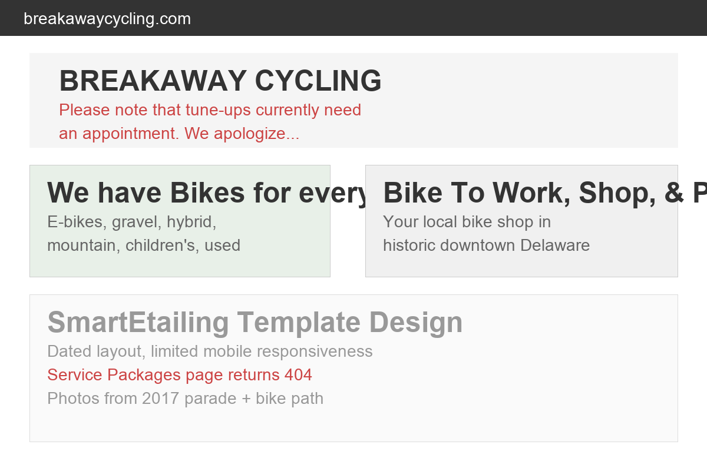

Breakaway Cycling is a full-service bicycle shop at 220 East William Street in historic downtown Delaware, Ohio, owned by Dan Negley. Founded in 1991, this is one of Central Ohio's longest-running bicycle stores. With 34 years in business, a 4.8-star rating on Yelp from 13 reviews, and a team of 5 employees who all ride, Breakaway is the real deal: a bike shop run by cyclists, for cyclists.
Dan's story is the kind that makes a local business special. He discovered his passion for cycling while leading a 500-mile bike tour through the foothills of Colorado and Wyoming during his senior year of college. He has raced road and mountain bikes, led bicycle tours, provided technical support for some of the largest rides in North America, and rides to work daily. He moved from Ralston, Nebraska (where he managed a leading bicycle store) to start Breakaway after his twin brother Rick, a pastor in the area, suggested Delaware would be a good location. That decision, made 34 years ago, has created an institution.
The shop's history mirrors the community's growth. Starting in a 1,500-square-foot former fast-food facility with 2 employees, Breakaway moved in 1994 to a 5,500-square-foot building that had been a former car dealership (and before that, a livery stable). In 2019, Breakaway moved to its current location at 220 E William Street (Route 36), just 5 blocks east of downtown Delaware and a block from the bike trail.
The product range covers the full spectrum: e-bikes, gravel, hybrid/fitness, mountain, children's, road, cruiser, commuter/urban, comfort, cyclocross, recumbent, tandem, triathlon, and specialty bikes, plus used bikes, a massive component and accessory catalog, rentals, trade-ins, and full repair services. The tagline says it well: BREAKAWAY... for the fun of it!
In a world of big-box sporting goods stores and online retailers, Breakaway occupies a rare and valuable niche: the knowledgeable local bike shop. Every employee rides. They commute by bike, participate in mountain and road rides, and repair their own bikes as well as customers'. When a customer walks in wondering whether they need a gravel bike or a hybrid, they get advice from someone who has actually ridden both on Delaware County roads.
Dan has been an active supporter of the local cycling community since opening day. He served as president of the Central Ohio Bicycle Dealer's Association, is a charter member of the National Bicycle Dealer's Association, served on the board of Main Street Delaware (as board president), and served on the board of Delaware County Friends of the Trail, a group dedicated to developing multi-use trails in Delaware County. This is not just a business. It is a community institution.
The shop also offers rentals for visitors and casual riders, trade-ins for customers upgrading, and service by appointment for tune-ups and repairs. The note on the website about requiring appointments for tune-ups (due to limited storage and increased service work) actually signals something positive: demand for their services is high.

Captured March 29, 2026
Breakaway Cycling does have a website at breakawaycycling.com. It is functional and includes an online product catalog (powered by SmartEtailing), the shop's story, links to bikes and accessories, and community event information. However, the site has significant design and user experience limitations:
Breakaway Cycling's primary competition comes not from other Delaware bike shops (there are essentially none) but from regional shops and online retailers:
Westerville Bike Shop (since 1973) is a peer in the Central Ohio independent bike shop market. Their website is a clean, modern Squarespace site with beautiful photography, a clear service list, and strong brand personality. The tagline "a small honest bike shop in central Ohio, since '73" immediately communicates identity and trust. It is simple, mobile-friendly, and reflects the shop's character. Breakaway has a better product range and deeper community involvement, but Westerville's digital presentation is more polished.
The biggest competitive threat to local bike shops is not other local shops. It is online retail. Trek.com, REI.co-op, Amazon, and specialty cycling retailers like Competitive Cyclist offer vast selection, detailed specs, customer reviews, and home delivery. What they cannot offer is the local expertise, test rides, professional fitting, ongoing service relationships, and community connections that define Breakaway.
The key to competing with online retail is not trying to match their e-commerce capabilities. It is doubling down on what makes local special: expert advice, hands-on experience, service relationships, community rides, and the trust that comes from 34 years in the same town. The website needs to communicate these advantages clearly and immediately.
Cycling searches are seasonal (peaking March-September) and highly local. People looking for bikes want to see, touch, and test ride before buying:
E-bike searches have grown dramatically over the past three years. E-bikes are the fastest-growing segment in the bicycle industry, appealing to commuters, older riders who want to keep cycling, and recreational riders who want to go farther. Breakaway already stocks e-bikes, but the website buries this information. A dedicated e-bike page with current inventory, pricing, and comparison tools would capture this high-value search traffic. E-bikes represent the highest average transaction value in the shop.
"Bicycle repair near me" is a high-intent, high-frequency search. People with a broken bike need help now. The current website says appointments are required for tune-ups but does not offer online booking. Every potential repair customer who cannot easily book an appointment online is a customer who might call a competitor or attempt a DIY fix. An online service booking system converts these searches into revenue.
Cycling is inherently seasonal in Ohio. Spring and summer bring the highest search volume, but each season has specific content opportunities:
A content strategy aligned with seasonal search patterns keeps the website relevant year-round and captures search traffic from cyclists at every stage of the buying cycle.
The bicycle retail industry is evolving rapidly. Here is what matters for independent bike shops in 2026 and beyond:
After years of pressure from online retailers, independent bike shops are experiencing a renaissance. The pandemic drove millions of new riders to cycling, and many discovered that buying a bike online without expert guidance leads to poor fit, wrong size, and frustration. The post-pandemic cycling market values the expertise, fitting, and service relationships that only local shops provide. Breakaway is perfectly positioned for this trend, having built exactly these relationships over 34 years.
E-bikes are bringing entirely new demographics into bike shops: commuters replacing car trips, older adults who want to keep riding, and recreational riders who want more range. These customers need guidance on battery range, motor types, maintenance, and riding technique. They come to local shops because this is not a purchase you make blind. A dedicated e-bike section of the website with educational content would attract these high-value customers during their research phase.
Smart bike shops are building recurring revenue through service memberships, annual tune-up plans, and loyalty programs. An online booking and service management system supports these models by making it easy for customers to schedule, track, and renew service plans. Breakaway's note about increased service demand signals that the market for this exists.
The deepest competitive advantage for a local bike shop is community. Group rides, trail advocacy, youth cycling programs, and event sponsorship create emotional connections that no online retailer can replicate. A website that showcases this community involvement, with event calendars, ride reports, photo galleries, and trail updates, turns the website into a community hub, not just a store page.
Breakaway Cycling has the reputation, the expertise, and the community roots. The website needs to reflect all of that. Here is the plan:
Replace the SmartEtailing template with a custom, responsive website that leads with the best of Breakaway: beautiful bike photography, Dan's story, community involvement, and the team's expertise. Mobile-first design because over 60% of cycling searches happen on phones. Clean navigation that makes it easy to browse bikes, book service, check rentals, and find the shop.
Implement an online booking system for tune-ups and repairs. The website already says appointments are required. Give customers the ability to book online 24/7 with their preferred date, time, and service type. Reduces phone call volume during busy hours and captures service requests from people who search at night or on weekends.
Create a dedicated e-bike page with current inventory, pricing, comparison tools, and educational content (battery range, motor types, riding tips). E-bikes are the highest-value products in the shop and the fastest-growing search category. A dedicated section captures this demand and positions Breakaway as the e-bike authority in Delaware County.
Add an events calendar for group rides and community events, a trail guide for Delaware County bike trails, and a photo gallery of rides and events. This transforms the website from a store page into a destination for the local cycling community. It also creates fresh, shareable content that drives recurring visits and social media engagement.
Fully optimize the Google Business Profile with professional shop and bike photos, complete service listing, current hours, online booking link, and the new website. Weekly Google Posts with new arrivals, seasonal specials, and ride announcements. This is the single most impactful listing for "bike shop near me" searches.
A bike shop redesign needs to capture the energy of the shop floor. Here is how we would approach it:
Total time commitment: under 2.5 hours for the initial build.
A website is the hub. Here is the full digital ecosystem for Breakaway Cycling:
24/7 online booking for tune-ups, repairs, and maintenance appointments. Customers select service type, preferred date, and drop-off time. Reduces phone call volume and captures after-hours service requests.
Dedicated e-bike section with current models, pricing, comparison tools, and educational content. Captures the fastest-growing segment in cycling with the highest average transaction value.
Events calendar with group rides, community events, trail maintenance days, and cycling advocacy updates. Turns the website into a destination for the Delaware County cycling community.
Fully optimized GBP with professional photos, service listings, booking link, and weekly posts. The #1 driver of "bike shop near me" search results. Regular updates with new arrivals and seasonal specials.
Instagram and Facebook content strategy showcasing new bikes, repair transformations, group rides, and trail photography. Cycling is inherently visual and shareable. Build a following that drives both online engagement and store visits.
Seasonal email newsletters with new arrivals, sale alerts, service reminders, and event invitations. A customer email list is the most valuable marketing asset for a local retailer, bringing customers back for their second, third, and tenth purchase.
A modern website with online service booking and e-bike showcase would drive incremental revenue across every part of the business:
Aspire Digital builds websites for locally owned businesses that have something worth showing off. Breakaway Cycling is exactly that: a 34-year-old institution with a passionate owner, a team that lives and breathes cycling, and a community that depends on the shop. That story deserves a digital home as good as the physical one on East William Street.
We love what Dan has built. A bike shop that opened in a 1,500-square-foot former fast food restaurant and grew into a 5-employee community institution over three decades does not need our help selling bikes. What it needs is a website that captures the same energy, expertise, and community spirit that customers experience when they walk through the door. The kind of site where a new Delaware resident searches "bike shop near me," lands on the page, and immediately knows this is their shop.
The story page on the current site is already beautifully written. Dan's Colorado cycling epiphany, the livery-stable-to-bike-shop history, the community involvement with Friends of the Trail and Main Street Delaware. All of that content is gold. It just needs a modern, mobile-friendly platform that does it justice.
No pressure, no jargon. Just a conversation about giving Breakaway Cycling the digital presence it has earned over 34 years.
Book a Free Strategy Callor email Chris directly